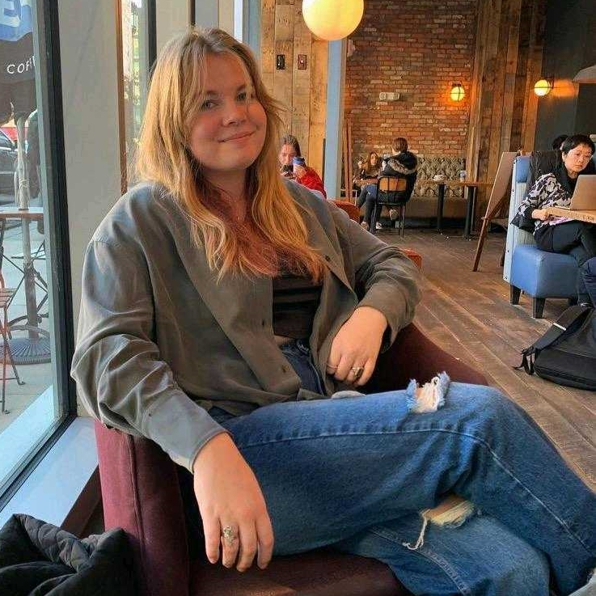
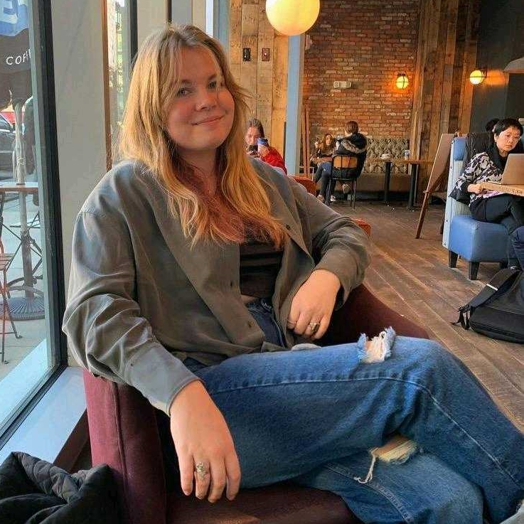

Northeastern students reflect on experiences, stigmas of dating apps
February 14, 2022
Dating apps are used by people of all backgrounds, but they’re commonly known to be a staple piece of the modern college culture.
As first-time and veteran dating app users are coming together in the immersive world of dating, The News spoke with nine students about their experiences and thoughts on what it means to meet romantic partners through a phone screen when the COVID-19 pandemic shut down all social scenes for almost three years.
Select a profile
 

Credits
"Emily Wagner profile" by Cathy Ching, projects editor.
Photo courtesy Emily Wagner.
"Zoe Iorizzo profile" by Avery Bleichfeld, news staff.
Photo courtesy Zoe Iorizzo.
"Jovanne Li profile" by Cathy Ching, projects editor.
Photo courtesy Jovanne Li.
"Luke Steimel profile" by Haley Alphonse, news correspondent.
Photo by Haley Alphonse.
"Pragnya Kousik profile" by Cathy Ching, projects editor.
Photo courtesy Pragnya Kousik.
"Katherine Miner profile" by Avery Bleichfeld, news staff.
Photo courtesy Katherine Miner.
"Dominic Imondi profile" by Haley Alphonse, news correspondent.
Photo courtesy Dominic Imondi.
"Pankhuri Khare profile" by Cathy Ching, projects editor.
Photo courtesy Pankhuri Khare.
"Smita Rosemary profile" by Haley Alphonse, news correspondent.
Photo courtesy Smita Rosemary.
Web design by Avery Bleichfeld.

Jovanne Li
Third-year, business administration and communication studies combined
As a romantic movie enthusiast, Jovanne Li, a third-year business administration and communication studies combined major, grew up wondering if she would be the main character of her own romantic movie. When Li entered the dating world in her first year of college, she quickly learned that it was not like the movies.
Li downloaded Tinder in 2019 and set her expectations high. Ultimately, she fell for a man who did not reciprocate the same feelings. As difficult of a reality as this was for Li to face, many people go through the same in the dating world. She came out of the situation learning to better her communication skills and change her expectations.
“Now, with the experiences that I’ve had, it’s made me understand better how to navigate the dating scene,” Li said. “It’s made me prioritize communication above anything else.”
After her first setback, Li realized the importance of telling people exactly what she was looking for to avoid further instances of miscommunication with a partner. She makes sure to always “overshare.”
“From now on, anytime I talk to someone, I’m always upfront about what they want and what I want,” Li said. “I make sure that we completely understand each other and what we’re getting into.”
Li has been on Tinder for almost three years now. She learned that most people on the app are strictly looking for short flings and, as a previous victim of unfulfilled expectations, adapted to the mindset of her peers.
“Now, with [Tinder], I’m going with the sense that it’s more of a ‘go with the flow’ situation,” Li said. “There’s never any pressure for it to turn into something long-lasting.”
Although Li is a die-hard advocate for romantic movies, she does not believe in what a lot of movies preach: the “perfect person.”
“Personally, I don’t believe in fate,” Li said. “I don’t believe that there’s only one right person for you. If we can have a lot of friends, then there’s no reason why there can’t be multiple people out there who are potentially good partners for you in a relationship.”
Regardless of Li’s disbelief in fate, she does believe that everyone deserves to be treated like they are the main characters of romance movies — whether they expect it or not.
“Don't settle for someone that's just OK,” Li said. “You should value yourself enough to know what you want and what you deserve.”